Capítulo 4
INDÚSTRIA METALÚRGICA
CONTEXTUALIZANDOOs metais são parte fundamental na vida contemporânea em diversos aspectos. Estão presentes na construção civil, medicina, transporte, comunicação, etc. A criação de altos- fornos, usados para derreter metais, é datada de séculos antes de Cristo. No séc. XVIII a indústria metalúrgica teve um impulso com a revolução industrial. Após o domínio do fogo, a metalurgia passou a ser possível, o ouro é possivelmente o primeiro metal utilizado pelo homem, possivelmente a mais de dez mil anos atrás. Apesar de raro, o ouro foi o primeiro metal a ser descoberto, por ser encontrado em sua forma metálica na natureza e não na forma mineral como a maioria dos outros metais. A primeira produção de metal foi conseguida ao se colocar minérios de estanho ou chumbo em uma fogueira, derretendo e purificando estes minérios. A indústria metalúrgica tem cinco principais funções, a fundição, produção de metais não ferrosos, produção de ferroligas e ferro-gusa, fabricação de tubos e siderurgia. A siderurgia é uma parte muito importante da metalurgia, se dedica a fabricação e tratamento de aços fundidos. A fundição ocorre quando um metal em seu estado líquido é colocado em um molde para atingir a forma desejada. O setor de automóveis, a construção naval ou aeroespacial, o desempenho dos setores da indústria transformadora está estritamente ligado com o desempenho da indústria metalúrgica. A importância do uso dos metais no cotidiano é imprescindível para o homem e esse uso só é possível por causa da indústria metalúrgica. O setor metalúrgico no Brasil apresenta tradição bastante exportadora, permitindo contribuições expressivas à balança comercial do país. Em 2007, a produção metalúrgica brasileira atingiu 50,2 milhões de toneladas, proporcionando um faturamento de US$ 62,5 bilhões, além de uma participação de quase 10% sobre o PIB industrial.
Embora o processo metalúrgico já apresente, diretamente, um papel bastante significativo na economia brasileira e mundial, sua importância econômica pode se elevar ainda mais caso sejam consideradas as atividades sequenciais consumidoras de seus produtos, como a indústria automobilística, a construção civil, os bens de consumo, dentre outros.
Como as tabelas e os diferentes tipos de gráficos, podem auxiliar na compreensão da balança comercial e nas estimativas e de aumento da produção metalúrgica?
Caro aluno, Ao longo deste capítulo, vamos explorar temas relacionados a organização de dados em gráficos e tabelas e como essa organização facilita sua intepretação, compreensão e comparação. Estudaremos os tipos e de gráficos e qual o mais adequado para cada informação.
As atividades propostas a seguir vão auxiliar a responder à questão proposta no início do capítulo.
(RE)CONSTRUINDO CONHECIMENTOSO primeiro passo para analisarmos um conjunto de dados é organizá-los. Para organizar dados, geralmente usamos tabelas que facilitam sua interpretação e compreensão.
Para interpretar corretamente os dados de uma tabela, é necessário identificar o tipo de informação representada em cada linha e em cada coluna.
Existem vários tipos de tabelas e vamos destacar alguns.
Tabelas simples: são usadas para apresentar a relação entre duas informações, como produto e preço, por exemplo. É formada por duas colunas e deve ser lida horizontalmente.
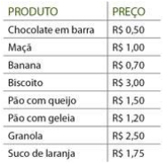Tabela de dupla entrada: são muito utilizadas para mostrar dois ou mais tipos de dados, como altura e peso, por exemplo. Deve ser lida na vertical e na horizontal ao mesmo tempo para relacionar linhas e colunas.
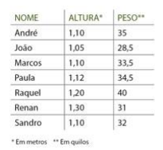Após organizar os dados, escolhe-se a melhor forma de representá-los graficamente.
Os vários tipos de representação gráfica constituem uma ferramenta importante, pois facilitam a análise e a interpretação de um conjunto de dados.
Os gráficos estão presentes em diversos meios de comunicação (jornais, revistas, internet) e estão ligados aos mais variados assuntos do nosso cotidiano.
Sua importância está ligada à facilidade e rapidez com que podemos interpretar as informações. Os dados coletados e distribuídos em planilhas podem ser organizados em gráficos e apresentados de uma forma mais clara e objetiva.
Várias instituições financeiras espalhadas pelo mundo (Bovespa, BM&F, Down Jones, Nasdaq, Bolsa de Nova York, Frankfurt, Hong-Kong, etc.) fazem uso dos gráficos para mostrar a seus investidores os lucros, os prejuízos, as melhores aplicações, os índices de mercado, variação do Dólar e do Euro (moedas de trocas internacionais), valorização e desvalorização de ações, dividendos, variação das taxas de inflação de países e
Os gráficos são recursos utilizados para representar um fenômeno que possa ser mensurado, quantificado ou ilustrado de forma mais ou menos lógica. Assim como os mapas indicam uma representação espacial de um determinado acontecimento ou lugar, os gráficos apontam uma dimensão estatística sobre um determinado fato.
Por esse motivo, interpretar corretamente os gráficos disponibilizados em textos, notícias, entre outras situações, é de suma importância para compreender determinados fenômenos. Eles, geralmente, comparam informações qualitativas e quantitativas, podendo envolver também o tempo e o espaço.
Existe uma grande variedade de tipos de gráficos, dentre os quais podemos destacar os de coluna, em barras, pizza, área, linha e rede.
TIPOS DE GRÁFICOS:Gráfico de colunas: São os mais utilizados expressar um dado quantitativo sobre diferentes variáveis, lugares ou setores e não dependem de proporções.
Os dados são indicados na posição vertical, enquanto as divisões qualitativas estão na horizontal.
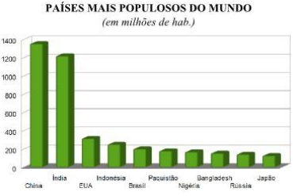Gráfico de barras: Esse tipo de gráfico tem a mesma função do gráfico de colunas, porém os dados estão na horizontal e as informações e divisões na vertical.
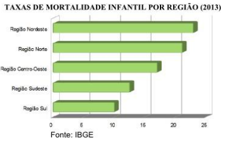Gráfico de setores (Pizza): como vimos no capítulo 2, expressam uma relação proporcionalidade em que todos os dados somados compõem o todo de um determinado aspecto da realidade. Normalmente, nesse tipo de gráfico, os dados estão em porcentagem e a soma de todas as porcentagens totalizam 100%.
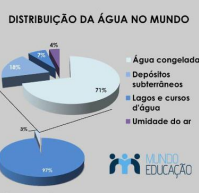Gráfico em linhas: Esse tipo de gráfico é utilizado para expressar um tipo de dado ao longo do tempo, demonstrando evoluções e regressões quando determinado fenômeno é observado.
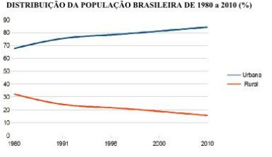Gráfico de áreas: É semelhante ao gráfico de linhas, mas evidencia uma proporção sobre o todo, apontando a relação dos diferentes dados entre
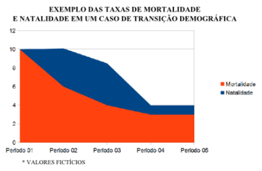Pictogramas: Num pictograma as barras são representadas por ícones e cada ícone representa uma quantidade.
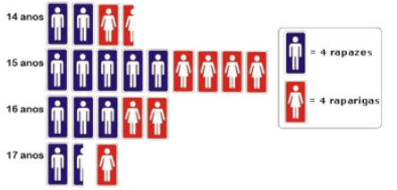PARA SABER MAIS
Os gráficos devem trabalhar em uma escala correta, do contrário podem passar a informação de forma errada ou distorcida. Desta forma, compreender o conceito de escala é fundamental, para que os alunos possam avaliar de forma crítica as informações mostradas nesse tipo de representação. Mas o que é escala? Uma escala é uma sucessão ordenada de valores distintos que pertencem a uma mesma qualidade. Denomina-se escala a um conjunto de valores ou classes que podem ser colocados dentro de uma mesma contingência ou uma entidade quantitativa. Existem diferentes tipos de escalas. Por exemplo, uma escala de mapeamento é a relação matemática entre as dimensões reais e desenho em um avião, como um mapa, Em relação a este conceito é de um desenho ou planta "em escala", ou seja, que não é efetuado em tamanho real, mas em uma determinada proporção. Isso é excluindo o caso de "escala", leitura da lenda em que o gráfico ou representação deve respeitar as proporções originais do objeto representado. Quando dizemos que algo é feito "à escala humana" significa que ele responde às proporções de um humano médio e, portanto, no caso de uma casa ou edifício, é habitáveis por indivíduos. Outro tipo de escala é a musical, um grupo de notas que constituem uma obra musical. Outras escalas comuns são a temperatura utilizada na produção de termômetros, cromáticas, classificação e uso de cores, por exemplo, em design gráfico ou pintura.
PARA ENTENDER MAIS...
Acesse o vídeo clicando no link a seguir:
AÇÃO E REFLEXÃO
1) Observe o gráfico a seguir e responda:
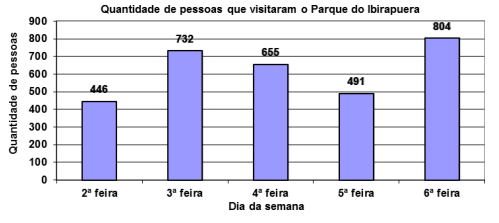a) Em qual dia da semana houve a maior quantidade de visitantes?
b) Em qual dia da semana houve menos visitantes?
c) Quantas pessoas, ao todo, visitaram o Parque do Ibirapuera nos cinco dias?
2) O estado das florestas do planeta e o que foi devastado pela ocupação humana, são os dados que estão representados no gráfico a seguir. Observe estes dados que foram publicados na revista Época de 08/02/1999 e depois responda:
a) Em quais continentes mais da metade das florestas foi devastada pela ocupação humana?
b) Qual a área atual de florestas no mundo todo?
c) Qual a área desmatada no mundo todo?
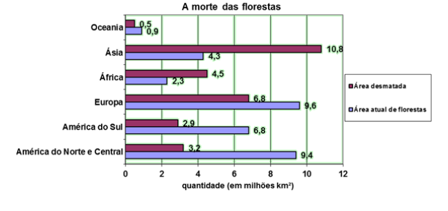3) O gráfico a seguir indica a altura máxima aproximada que algumas árvores brasileiras atingem.
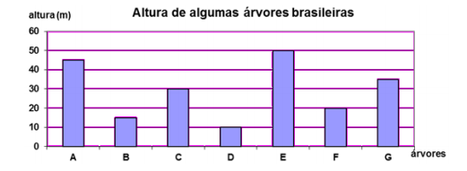De acordo com as informações apresentadas no gráfico e com os dados abaixo identifique a árvore correspondente a cada coluna do gráfico e a altura máxima de cada árvore.
a) O jequitibá atinge 45 metros de altura.
b) O cedro atinge até 10 metros a menos que o jequitibá e 5 metros a mais que o pau- brasil.
c) O pau-brasil atinge 10 metros a mais que o abacateiro-do-mato e 14 metros a mais que a peroba.
d) A castanha-do-pará é cinco vezes maior que o cajueiro.
4) O gráfico de linhas abaixo mostra a produção de leite na Fazenda do Senhor B.Zerra no primeiro semestre do ano de 2006. Analise-o e responda:
a) Quantos litros de leite foram produzidos em janeiro?
b) Que mês teve a menor produção de leite?
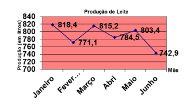5) O número de erros na primeira página de um jornal diário de grande circulação, em 200 dias pesquisados, está no gráfico a seguir:
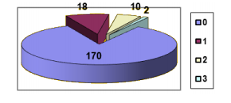Represente os dados (número de dias) em porcentagem.
6) Na revista Isto É de 23/02/2005 foi publicado a quantidade (em toneladas), dos países que mais emitiram CO2 na atmosfera no ano de 2000.
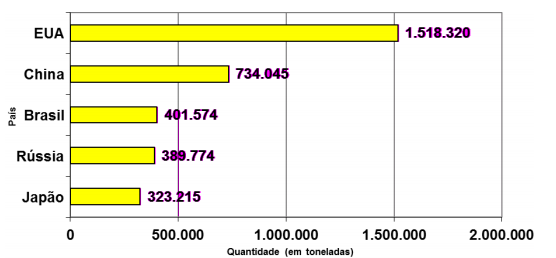Determine a diferença, em toneladas, de emissão de CO2 entre:
a) EUA e Japão =
b) China e Rússia =
c) Brasil e Japão =
d) EUA e Rússia =
O QUE APRENDINeste capítulo, vimos a importância que tem as tabelas e gráficos quando vamos analisar um conjunto de dados, facilitando o acesso a informação e possibilitando uma compreensão imediata das informações que retratam. Asssim, vimos os diferentes tipos de tabelas e gráficos, para que são mais adequados e que devem respeitar uma escala para evitar a distorção dos dados apresentados.
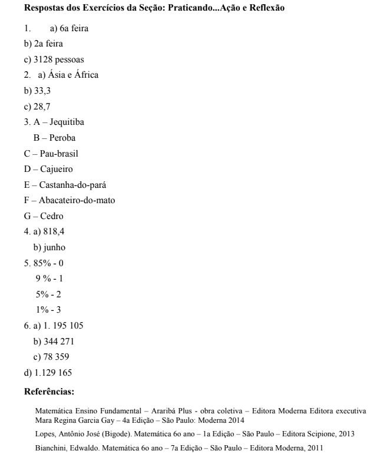